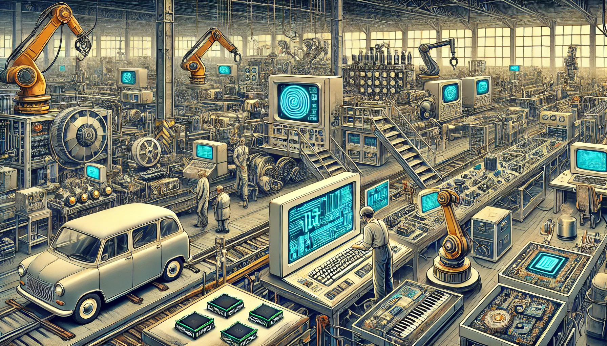
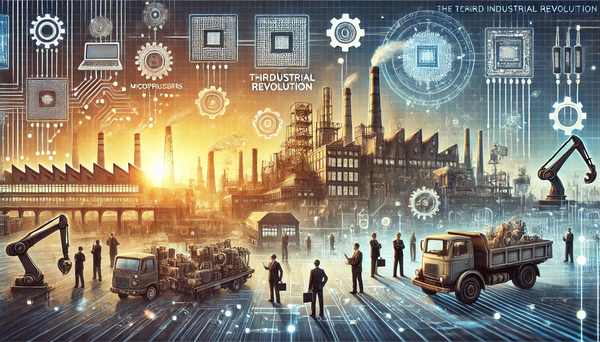
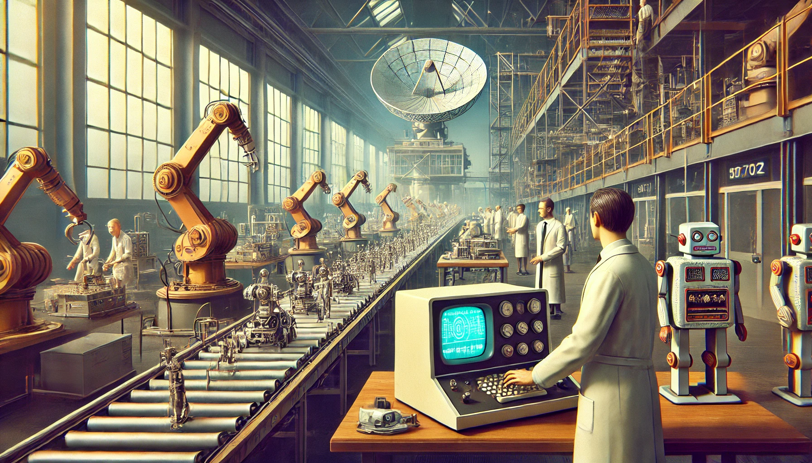

-

(Chatgpt)
(Gambar hanyalah ilustrasi)Sejarah Singkat
Revolusi Industri 3.0, atau dikenal sebagai Revolusi Digital, terjadi pada pertengahan abad ke-20 dengan berkembangnya komputer dan teknologi informasi. Perubahan ini memungkinkan otomatisasi dalam industri melalui penggunaan komputer dan robot, yang meningkatkan efisiensi serta mengurangi ketergantungan pada tenaga manusia. Selain itu, kemajuan internet dan teknologi komunikasi mempercepat konektivitas global, mengubah cara manusia bekerja, berkomunikasi, dan berinteraksi. Dampaknya tidak hanya dirasakan di sektor industri, tetapi juga dalam bidang ekonomi, pendidikan, dan budaya, membuka jalan bagi inovasi teknologi yang terus berkembang hingga saat ini.
(Kumparan.com)
-

(Chatgpt)
(Gambar hanyalah ilustrasi)Latar Belakang
Revolusi Industri 3.0, atau Revolusi Digital, dimulai pada pertengahan abad ke-20 dengan berkembangnya komputer dan teknologi informasi. Perubahan ini memungkinkan otomatisasi industri melalui penggunaan komputer dan robot, yang meningkatkan efisiensi serta mengurangi ketergantungan pada tenaga manusia. Selain itu, kemajuan internet dan teknologi komunikasi mempercepat konektivitas global, mengubah cara manusia bekerja, berkomunikasi, dan berinteraksi. Transformasi ini tidak hanya meningkatkan produktivitas di sektor industri, tetapi juga berdampak pada bidang ekonomi, pendidikan, dan budaya. Revolusi Industri 3.0 membuka jalan bagi inovasi teknologi yang terus berkembang hingga saat ini, membentuk dunia yang semakin digital dan terhubung.
(WIkipedia)
-

(Kumparan.com)
Penemuan
Berikut adalah penemuan Penting dalam Revolusi Industri 3.0:
1. Mikroprosesor – Intel (1971)
2. ARPANET (cikal bakal internet) – ARPA (1969)
3. World Wide Web (WWW) – Tim Berners-Lee (1989)
4. Email – Ray Tomlinson (1971)
5. Robot industri pertama (Unimate) – George Devol (1961)
6. Programmable Logic Controller (PLC) – Dick Morley (1969)
7. Handphone pertama – Martin Cooper, Motorola (1973)
8. Chip semikonduktor – Jack Kilby & Robert Noyce (1958, berkembang pesat di era 3.0)
9. RAM dan ROM – IBM & Intel (perkembangan pesat sejak 1960-an)
10. Satelit komunikasi – NASA & AT&T (1960-an, berkembang di era 3.0)(Sumber: Brynjolfsson & McAfee, The Second Machine Age, 2014; Tim Berners-Lee, Weaving the Web,1999).
-

(Chatgpt)
(Gambar hanyalah ilustrasi)Dampak
Dampak Revolusi Industri 3.0 :
1. Industri & Otomasi
- Otomatisasi produksi dengan robot dan PLC meningkatkan efisiensi.
2. Komunikasi & Informasi
- WWW (1989) memudahkan akses informasi bagi semua orang.
3. Teknologi & Elektronik
- Mikroprosesor (1971) mendorong perkembangan komputer pribadi (PC).
4. Dunia Kerja
- Tenaga kerja harus memiliki keterampilan digital untuk tetap relevan.
5. Sosial & Ekonomi
- Globalisasi meningkat karena kemudahan komunikasi dan ekspansi bisnis internasional.
(Sumber : Brynjolfsson & McAfee, The Second Machine Age (2014).)
-
(Chatgpt)
Tokoh Penting
Tokoh dan Penemuannya dalam Revolusi Industri 3.0 :
1. Robert Noyce – Menemukan mikrochip dan turut mendirikan Intel, yang menjadi pionir dalam perkembangan komputer modern.
2. Ted Hoff – Mengembangkan mikroprosesor pertama (Intel 4004, 1971), yang menjadi dasar bagi semua komputer modern.
3. Tim Berners-Lee – Menciptakan World Wide Web (WWW, 1989), yang merevolusi akses dan berbagi informasi di internet.
4. Ray Tomlinson – Merancang sistem email (1971), memungkinkan komunikasi digital antar komputer.
5. Martin Cooper – Mengembangkan dan melakukan panggilan pertama dengan handphone pertama (1973), membuka era komunikasi mobile.
6. Jack Kilby – Menemukan sirkuit terpadu (1958), yang menjadi dasar bagi perkembangan mikroelektronika dan komputer.
7. George Devol – Menciptakan robot industri pertama (Unimate, 1961), yang digunakan dalam manufaktur otomatis.
8. Dick Morley – Mengembangkan Programmable Logic Controller (PLC, 1969), yang merevolusi sistem kontrol industri.(WIkipedia)